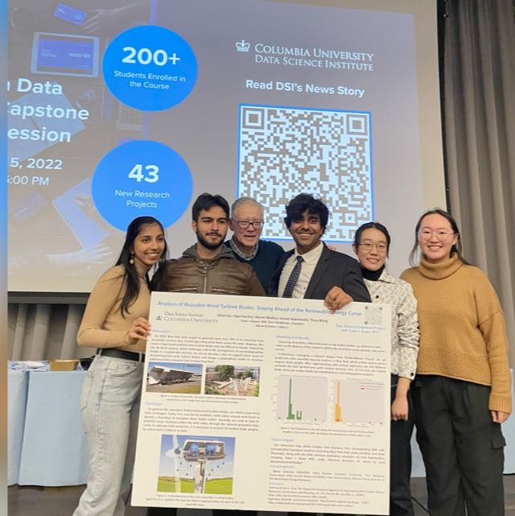

Investment operating platform
AIRIA
Cloud-hosted environment for portfolio oversight, benchmark management, trading support, risk analysis, tax workflows and reporting. The core of the firm's trading technology since July 2025.
Move through the field
Computer AI and Technology Scientist
Architect of AIRIA and AURA, the AI-powered operating platforms behind a $5 billion investment firm.
Hired to fix code. Built an operating system instead.
I design and build production systems end to end. At GenTrust, a registered investment adviser managing more than $5 billion, a legacy modernization assignment became AIRIA and AURA: a secure operating environment that now connects investment, trading, research, reporting, advisory, compliance and operational work across the firm.
Front end, back end, APIs, mobile, dashboards, pipelines, security, deployment and the product design. Built in roughly four months, on an initial model budget of about fifty dollars a month.
The work
Every platform below runs in production today at a firm managing more than $5 billion.
01 / 06
Investment operating platform
Cloud-hosted environment for portfolio oversight, benchmark management, trading support, risk analysis, tax workflows and reporting. The core of the firm's trading technology since July 2025.
Enterprise AI assistant and application builder
A secure agent platform, not a thin wrapper on a public model. Agent routing, context assembly, memory, guardrails, permissions and auditability, integrated with Salesforce, Addepar, documents and portfolio data.
Meeting intelligence
Client-side speech to text, secure summaries, action items and CRM integration. Post-meeting admin work finished in minutes.
Concierge analytics
Forecasting, dashboards and advisor-facing insight, designed for quick reading and immediate follow-through.
Research and reporting
PDF, Excel, research and password-protected documents turned into structured summaries, extracted data and role-specific output.
Quantitative tooling
Flask-based research and backtesting workflows with high-frequency data refresh and micro-hedging experimentation.
I authored the firm's agent review framework: access delta review, action and identity review, data use and third-party review, restricted-data controls, lifecycle recertification, and pre-production testing with redacted data, including prompt injection and unauthorized access scenarios.
“They brought me in to clean up legacy systems. What started as maintenance turned into a complete reinvention.”
Columbia Data Science Institute, September 2025
“I wanted to make something people actually want to use.”
Vipul H. Harihar
Experience
Projects

Encrypted, offline-first healthcare application for 79 pediatric cardiac patients.

Geospatial machine learning for the carbon impact of 70,800 decommissioned blades. Delivered to NYC DDC.
Real-time object detection in the browser across 90 classes, using TensorFlow.js and COCO-SSD.
Camera-based emotion recognition driving music recommendation, built at Columbia.
Music search, rapid-sequence DJ mode, virtual mixing, pitch play and track recording.
Machine learning imaging platform for potholes and accident risk, with map severity and nearby alerts.
Live experiment · Public data
A working intelligence engine over live community stories. Search any topic, tune the ranking model, and inspect exactly why each result rises.
Persistent brief
{
"query": "artificial intelligence",
"pins": []
}Pins live in this browser. Their scores update whenever your weights or live signals change.
The Signal Letter
Receive occasional notes on applied AI, systems, and the signals worth carrying forward.
In production
Not a prototype and not a demo. The platforms run every day across investment, trading, advisory, compliance and operations teams.
Capabilities
Python. Java. JavaScript. SQL. R. Bash. C and C++. HTML and CSS.
Anthropic and OpenAI APIs. Agent workflows. Retrieval and context systems. NLP. TensorFlow. PyTorch. Keras. scikit-learn. XGBoost. Computer vision.
Flask. Spring Boot. React. Angular. Node.js. REST APIs. Mobile integration.
AWS EC2, S3, RDS and CloudFormation. Azure. BigQuery. Docker. CI and CD. Red Hat OpenShift. Monitoring.
ETL pipelines. Spark. Kafka. Hadoop. MySQL. NoSQL. DB2. Power BI. Tableau. Cognos.
Distributed systems. Microservices. Role-based access. PII masking. Zero Data Retention. Audit logging. Secrets management.
Education
Master of Science, Data Science
Bachelor of Technology, Computer Science and Engineering
Recognition
Contact
Columbia Data Science Institute · September 2025
When Vipul Harihar, MS 2023, was hired by GenTrust, a wealth management firm with offices in New York, Miami and Puerto Rico, the expectations were straightforward: clean up code, support internal systems and help modernize a traditional trade operation.
But when company leadership asked if he could do something with AI, he took it as a serious engineering challenge. Four months later he had designed and built an AI-powered proprietary operating system that integrates with internal and third-party software, and it is now the core of the firm's trading technology platform.
The platform, launched in July 2025, uses the same kind of language model behind tools like ChatGPT, adapted into a secure system built for financial operations. Many AI tools are unusable in wealth management given their tendency to hallucinate and the risk that user data could be shared or used to train models. Harihar built a custom system that turns thousands of internal documents, workflows and compliance rules into information the model can draw on, without sharing any data.
He also reduced hallucinations by limiting what the model is asked to do. The platform operates within tight boundaries and, unlike most language models, asks clarifying questions when it is unsure.
Perhaps most remarkable: Harihar built the entire system himself. Front end, back end, mobile integration, dashboards, data pipelines and the product's visual design. The total development budget was fifty dollars a month, covering access to the language model API.
“I didn't come to DSI with all the answers. But I left with the ability to build something from start to finish. Columbia teaches you how to operate without a fixed blueprint.”